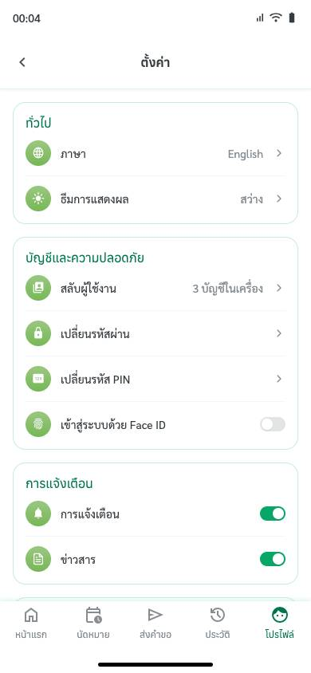

4 · ทำต่อไม่ได้U09 · T1 · H2 ภาษาตรงกับผู้ใช้
เลือก English ในตั้งค่าแล้ว ข้อความทั้งแอปยังเป็นไทย · ไม่มีภาษาเมียนมา · หน้าเข้าสู่ระบบไม่มีปุ่มเปลี่ยนภาษา
- พบโดย
- Mr. Aung (1)
- ข้อเสนอ
- แปลจริงอย่างน้อยเมนูหลัก + ปุ่มภาษาบนหน้าเข้าสู่ระบบ · พิจารณาภาษาเมียนมา/กัมพูชา/ลาว